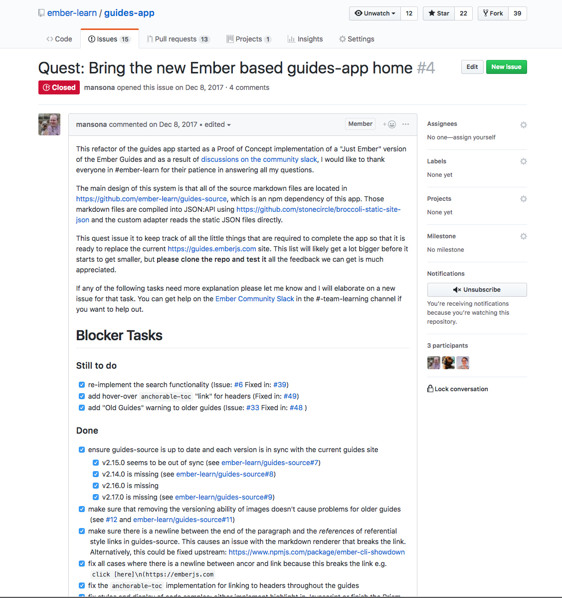

Running an Effective Open Source Learning Team
By Todd Jordan
How I Got Here
Our mission is to build stronger communities by strengthening their financial institutions
So What's a Learn Team?
Ember Learn Mission Statement
The mission of the Ember Learning Team is to empower Ember users to learn, build and teach.
Not Just a Docs Team
From the initial Ember Learn Team Charter:
Documentation is just one part of how new users learn to use Ember. People start learning the second they land on the website homepage, or when they see a presentation at their local user group.
Holistic Learning
…We want to make holistic learning a central part of Ember… this means thinking about how members of the community interact, how they get help, and how we introduce them to new features…
A Learn Team Walks Alongside
A Learn Team Evolves
A Learn Team is a Community
Chat

Regular Contributors

Weekly Learn Team Meetings
Team Face to Face
Why A Learning Team?
The learning experience can make or break a technology
Much of the tech OSS Culture is "What's hot right now"
There are many "X vs Y vs Z!" posts
Its hard to shed a stigma
"Ember's hard to learn"
"Ember's slow"
"Ember's a dinosaur"
Advice For Teams
Where to Start
API, Guides Content

Hosting

Identify Your Champions

Build your team by building a community
Celebrate Publicly
Avoid Gatekeeping
Provide Opportunities for Many

Some will stick
Ask People to Come Along
The more people join, the faster it grows

Empower Leaders
Ownership and Access

Support from the Top

Getting Community Feedback

Mind your SEO
Make Learning Accessible to All
All Experiences

All Langauages/Cultures

All Abilities

Make All Things Open
Public Meetings
Searchable discussions
RFC Process
Trackable Work
Thanks!!!
- Todd Jordan
- @tddjordan
- Pick up a "Shortest Ember Book" on your way out